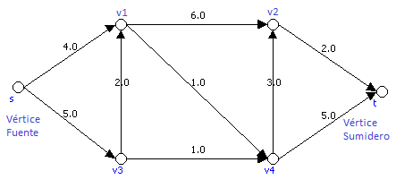
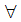
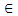
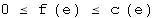
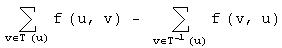
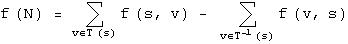
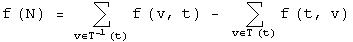
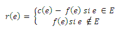
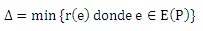

Este algoritmo sólo se puede aplicar a grafos dirigidos débil conexos.
Una red N(G,s,t,c) es una cuaterna definida de la siguiente forma:
donde:
G -> Grafo dirigido débil conexo
s -> vértice de G tal que su grado de salida sea mayor que 0 (vértice fuente)
t -> vértice de G tal que su grado de entrada sea mayor que 0 (vértice sumidero)
c -> función c: E(G) -> N U {0} (función capacidad)
Ejemplo:

Se llama flujo f en N a una función f: E(G) -> N U {0} que verifica las siguientes condiciones:
a) eE(G)  (limitación por capacidad)
b) uV-{s,t}

(ecuación de conservación)
Propiedad:
Así como la capacidad es una característica de cada red, el flujo no lo es, y un flujo dado puede ser modificado. El flujo más sencillo es f(e) = 0 para todo e que pertenece a E(G).
Y otro nuevo concepto, flujo de la red. No lo confundas con el anterior.
Dada la red N(G,s,t,c) se llama flujo de la red al valor f(N) definido como

Propiedad:
Se comprueba que

Nota. El flujo, f, representa lo que se transporta en la red.
Grafo Gr = (Vr, Er) con Vr ) V, Er = E U {(u,v) E} y función asociada r: Er --> N U {0} donde

Se llama camino f-incrementable de s a t, a todo camino P de s a t en el grafo residuo Gr que verifique r(e) > 0.
Se denota 
Nota. Observa que los caminos que hemos utilizado para localizar en Gr el flujo máximo se llama f-incrementable.
Teorema
Sea f flujo en la red N(G,s,t,c)
f es flujo máximo en N <-> No existe camino f-incrementable
inicializar flujo f=0;
construir grafo residual Gf asociado a f = 0;
maxflow = 0;
while (existe camino de aumento de s a t en Gf) {
delta = menor capacidad del camino de aumento;
maxflow += delta;
para cada arista (u,v) del camino de aumento hacer {
c_f(u,v) -= delta;
c_f(v,u) += delta;
}
}
return maxflow;